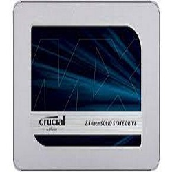
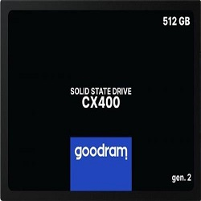
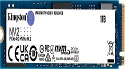

|
Crucial 500GB 2,5" SATA SSD MX500 Pojemność: 500 GB Interfejs:2,5" SATA Prędkość odczytu:560 MB/s Prędkość zapisu:510 MB/s SKLEP  |
Crucial 500GB 2,5" SATA SSD BX500 Pojemność: 500 GB Interfejs:2,5" SATA Prędkość odczytu:560 MB/s Prędkość zapisu:510 MB/s SKLEP |
|
Dysk SSD GoodRam CX400 gen.2 512GB 2.5" SATA III Pojemność: 512 GB Interfejs: SATA initial-scale Prędkość odczytu:550 MB/s Prędkość zapisu:500 MB/s SKLEP  |
Dysk SSD Kingston NV2 1TB M.2 2280 PCI-E x4 Gen4 NVMe Pojemność: 1TB Interfejs: PCI-E x4 Gen4 NVMe Prędkość odczytu:3500 MB/s Prędkość zapisu:2100 MB/s SKLEP  |